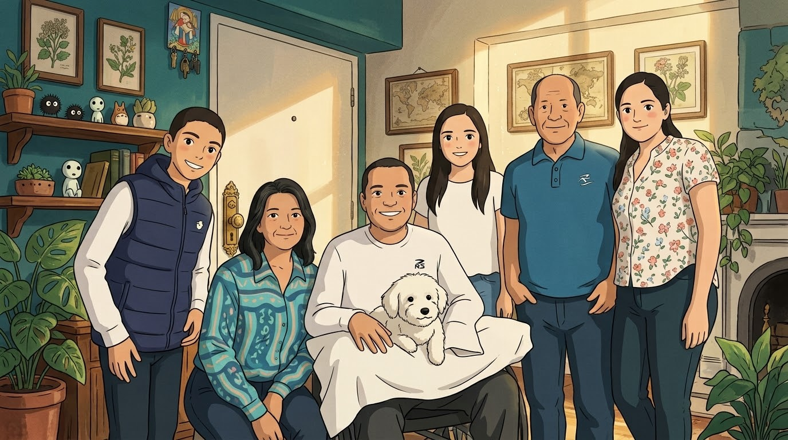

Somos una familia de entusiastas de la repostería con muchos años de experiencia. Nuestra pasión nació en la cocina de casa, perfeccionando el arte de hornear a través de recetas tradicionales de recetarios y programas de televisión, combinadas con nuestras propias innovaciones.
Cada producto es el resultado de pruebas personales, ajustes constantes y, sobre todo, mucho amor por crear dulces únicos. No somos una fábrica; somos una familia que hornea con dedicación para que cada bocado te transporte a un momento especial.
A lo largo de los años, hemos aprendido que la repostería es mucho más que mezclar ingredientes: es un acto de amor, paciencia y creatividad. Cada galleta que sale de nuestro horno lleva consigo horas de dedicación, recetas probadas una y otra vez hasta alcanzar la perfección, y el cariño de una familia que cree en hacer las cosas bien.
El nombre SLAKIDOM nació de nuestra admiración por la expresión rusa "Sladki Dom" (Сладкий Дом), que significa "Casa Dulce". Queríamos que nuestra marca representara exactamente eso: un hogar donde los dulces se preparan con el mismo amor con el que se cocina para la familia. Un lugar donde cada producto cuenta una historia y cada sabor evoca un recuerdo.
Hoy, seguimos creciendo, aprendiendo y mejorando. Cada nuevo producto es una aventura, cada cliente es parte de nuestra extended family, y cada día en la cocina es una oportunidad para hacer algo especial. Gracias por permitirnos ser parte de tus momentos dulces.
Con cariño, la familia SLAKIDOM 🍪